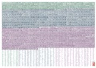

JLPT Level N5 Kanji List
This kanji list is derived from the pre-2010 Test Content Specification. As of 2010, there is no official kanji list. This list is an approximate guide that is likely to match requirements for the N5 exam|
Kanji Poster

|